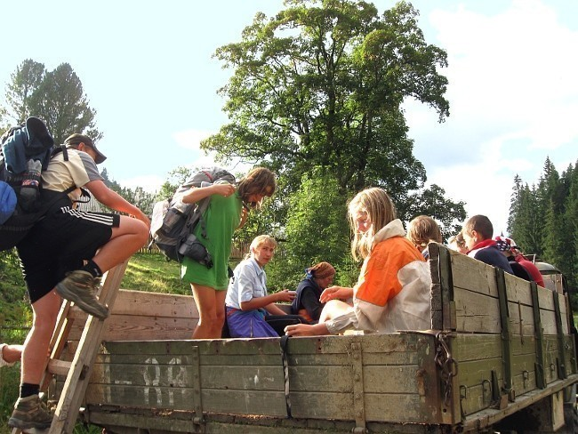

Na Ukrajinu? Prý jsme blázni.
2008/08/30, ➪Tak jsem se vrátil z Zakarpatské Ukrajiny, překvapivě brzy (jako vždy), překvapivě snadno a překvapivě úplně v pořádku. Jaké to bylo a co se dělo? Čtete dál.

Z Prahy až do Košic
Celá příprava na Ukrajinu byla dost narychlo, Jenda dal přesné informace vědět až dost dlouho - o prázdninách a to je pak nestíhačka sehnat všechny potřebné věci, zvláště z toho důvodu, že všichni jsou pryč po dovolených, babičkách a strýčcích.
Nakonec se ale podařilo vše sehnat - kotlík se koupil, vařič byl už z našeho jarního výletu, stan také byl. Se stanem to bylo obzvláště veselé. Johana tvrdila, že má stan, do kterého se v pohodě vejde šest lidí. Nakonec se ukázalo, že by se tam šest lidí opravdu vyspalo, ale protože byla Johana na tenisovém soustředění i se stanem a já ho nemohl okouknout, vzali jsme radši každá futrpatra stan svůj.
Bylo úterý a sraz byl v sedm hodin večer v Praze na Hlavním nádraží. Z Nýrska jsme vyráželi tři - já, Johana a Klára. Do Klatov jsme byli dovezeni autem, z Klatov do Prahy jsme bez problému dojeli vlakem, pohodička leháro, dokonce i přesun ze Smíchova na Hlavák jsme zvládli bez problémů - zvláště díky Kláře, protože Johana, nás trochu mystifikovala v udávání správné trasy metrem. Prý si chtěla trochu více zajezdit.
Jen co jsme vylezli z metra potkali jsme Marušku, která už také čekala. Bylo ještě hodně brzo před srazem (zbývalo asi půl druhé hodiny), a tak jsme si sedli před nádražím na lavičku a sledovali pochybná individua.
Za necelou hodinu na nás natrefil Kryštof, kterého do Prahy dovezli rodiče a dle jeho slov ho vyhodili z auta na první zastávce metra. Seděli jsme tam tedy ještě chvilku a pak jsme se vydali dovnitř, že tam třeba už někoho potkáme. A taky že jo. Hned ve vstupních dveřích jsme se srazili s Jendou a Sváťou. První co nás bacilo do očí, byly Honzovy boty. Všichni jsme byli obutí už v botách do hor - těžké pohorky, prostě pořádné boty. A Honza si přijde s botami, které u nás na gymplu dostaly přezdívku gumáky, navíc ve vysoce svítivé oranžové. Až je na fotkách uvidíte, určitě je poznáte - svítí opravdu krásně.
Nahoře už seděli ostatní a tak byla naše parta zkompletována. A tady je letošní složení tchoříků: Jenda, Maruška, Lenka, Jáňa, Johana, Kryštof, Pavel, Klára, Sváťa a samozřejmě také já.
Pomalu jsme se přesunuli do vlaku, ale bylo v něm šílené vedro a tak jsme se radši zase přesunuli ven na perón. Po rozjezdu vlaku se uskutečnila válečná porada, Jenda nás seznámil s plánovanou trasou, místním jazykem a zvyklostmi (třeba to, že když nad čajem od domorodce prohlásíme, že je horký, patrně se urazí. Bude si myslet, že říkáme hořký).
Měli jsme zakoupená lehátka a po poradě jsme zkoušeli spát. Moc se nedařilo, ve vlaku se člověk moc nevyspí. K ránu jsme přijeli na konečnou, do slovenských Košic. Mám takové tušení, že mohlo být něco okolo sedmé hodiny, ale úplně jist si tím nejsem. Dojedli jsme svačinky z domova a nasedli jsme na místní kodrcák jedoucí do Čierné nad Tisou.
Jsme celebrity
Situace v Čierné se pro nás výrazně zhoršila - zjistili jsme, že přes hranice jezdí jen dva vlaky denně - jeden šíleně brzo ráno a druhý někdy kolem páté odpoledne (opět si nejsem tímto časem moc jist). A co my tady když je ještě dopoledne? Nejdřív jsme se zkoušeli dostat někam, kde bychom se mohli vykoupat. To se ukázalo být velkým problémem a nakonec z toho sešlo - stali jsme se však tak populárními mezi místními domorodci, že jsme raději zalezli zpátky na nádraží, kde jsme měli svůj klid.
Nejdřív jsme se totiž ptali místních na cestu ke koupališti - z těch jsme toho moc nevypáčili. Pak si nás ale (doslova) našel pán, který si potřeboval postěžovat na život a ten nám prozradil, že Tisa je asi osm kilometrů daleko (a na koupání, že je skvělá).
Tam se nám moc nechtělo, osm kilometrů tam, osm zpátky, to se radši koupat nebudeme. Za chvíli nás ale zastavil další domorodec, který se dozvěděl, že se chceme koupat a taky měl s námi touhu si popovídat. Radši rychle na nádraží!

Museli jsme čekat asi šest hodin - na řadu přišel poker, a když i ten začal nudit, hry značka šílené. Nejdřív jsme si dupali po nohou (to poznáte na fotkách, vypadají akčně), pak jsme zas na sebe řvali "HU" a dávali si ruce k hlavám (taky je tam jedna fotka) a nakonec jsme začali kokodákovat a kikirikovat. Prostě bylo veselo.
Pak konečně nastala chvíle, kdy měl jet vlak na Ukrajinu. Na ten s námi čekalo dost domorodců a ještě jedna parta z Čech, která přijela posledním vlakem. Přes hranice jsme se dostali bez problémů, dokonce i s noži - na Ukrajinu totiž nesmíte převážet nože s čepelí delší než šest centimetrů, což z nás měli skoro všichni skoro nikdo (a Jenda navíc do batohu přibalenou solidní mačetu).
Až do Dilove
A byli jsme na Ukrajině. Přesně řečeno v Čopu (Чоп) na nádraží. Jenda bleskurychle dojednal odvoz do Mukačeva (Мукачеве) - jeli jsme třemi auty a kdybych nebyl zvyklý jezdit v autobuse s Ukrajincem, asi bych se strachoval podobně jako ostatní - přes vesnice jel prý devadesátkou, na nejvyšší dosaženou rychlost se nikdo radši nedíval. Jak při slalomu se proplétal stádem krav, které šlo zrovna po silnici. A navíc měl puštěné disco na plné perdy, což našemu psychickému stavu moc nepřidalo.
V Mukačevu nás vysadili na autobusovém nádraží a kdyby mělo pořádný asfalt a ne jenom štěrk, dost by připomínalo autobusák v Klatovech. Běhala tam smečka deseti psů, ty na fotkách taky uvidíte a dokud Jenda jednoho nenakopl byli dosti otravní.

Byl už večer. Pro nás o trochu dříve, protože Ukrajina je v jiném časovém pásmu a tak jsme si šoupali hodinky o jednu hodinu dopředu. Nasedli jsme na autobus směrem na Dilove - vesničku kam jsme měli namířeno. Asi v půl jedné ráno jsme tam konečně dorazili - místní autobus nebyl nejnovější, navíc nám nahatec v zadu pozavíral okýnka - jemu bylo příjemně, nám šílené vedro a svlékat jsme se nechtěli.
Pavel si celou cestu povídal s chlápkem, co kdysi pracoval deset let v Česku. Přes nás a naše plány se dostali až k Premier League, Škodovkám v Mladé Boleslavi a díky němu jsme v Dilove i vystoupili - autobusák nám nějak zapomněl zastavit.
V Dilove jsme potkali místní opilce, od kterých jsme raději svižně odešli - s láhví vodky v ruce nevypadali nejlépe. Kousek za vesnicí jsme se na loučce utábořili, spalo se pod širákem.
Ráno nastalo naše první vaření. Vařili jsme po skupinách, já s Pavlem a Johanou, Kryštof s Lenkou a Jáňou, Jenda s Maruškou, Klárou a Sváťou. Naše skupina začínala raději opatrněji, dali jsme si jen čaj s chlebem, sýrem a salámem a výborně jsme se najedli.
Honza musel jít vyřídit povolení - chtěli jsme totiž jít po horách, kterými vede hranice Ukrajiny s Rumunskem a tam se bez povolení nesmí (ani z jedné strany) - a tak jsme si my ostatní dali leháro na sluníčku (taky uvidíte na fotkách).
Povolení jsme dostali a tak jsme konečně vyrazili do hor. Musím říct, že po dvou dnech ve vlacích a na nádražích jsem byl upřímně rád.
Čekal nás nemalý úkol - dostat se nahoru do hor. Převýšení bylo něco kolem 1.700 metrů, což není žádná sranda, zvlášť pokud máte na zádech těžkou krosnu s proviantem na celý týden.
Nakonec jsme to rádi zalomili u srubu pod naší první horou (název už jsem zapomněl). Chtěli jsme sice dojít až k Pop Ivanovi, to se ale ukázalo jako nereálné. Postavili jsme stany, dali večeři a poseděli u ohně. Honza nás seznámil s Nikolou Šuhajem, dalším z těch co bohatým brali a chudým taky tak. Zapěli jsme Havrany na plotu a šli spát.

Noc nebyla úplně podle našich představ - spal jsme ve stanu s Kryštofem a Pavlem, náš stan někde na fotce taky bude - hlavní bylo to, že je kulatý - natáhnout nohy může jen ten uprostřed. Zkuste spát někdy celou noc se skrčenýma nohama. Proto jsme se snažili z krajů dostat co nejvíc doprostřed a Pavel, který spal uprostřed, říkal, že jsme ho celou noc mlátili a utlačovali. Možná na tom bude něco pravdy.
Ráno bylo krásné a tak jsme s chutí vyrazili po náročném dni dál. Hned ze začátku jsme trochu sešli z cesty a museli to vzít azimutem, abychom se dostali zpět na naši cestu.
Bu bu bu, pojďte k nám
Tady nás Honza strašil rumunskými pohraničníky - koho chytnou za hranicí, má po výletě a poputuje někam do rumunska na policii. Naštěstí nás nikdo nechytil i když jsme v Rumunsku občas byli.
Na Popu Ivanovi jsme potkali další českou výpravu a místní domorodce, kteří si užívali výhled do kraje. Na fotkách je poznáte, jeden ukazuje do kraje a je trochu spoře oblečen.
Jen jsme slezli z Ivana potkali jsme další Čechy a nakonec se ukázalo, že jednoho z nich Honza zná. Také jsme tam dali oběd, naše skupina měla navařeno už od snídaně, výborné vločky s kakaem. Naštěstí jsme je dojedli a nemuseli je jíst i k večeři.
Šlo se dál, cesta pěkná, krajina a počasí též, to ostatně uvidíte na fotkách. Celou naší výpravu nás provázela nouze o vodu - asi před měsícem byly v Podkarpatské Rusi povodně, teď bylo zase naopak sucho.
Přenocovali jsme na pěkném tábořišti, jen k vodě to bylo asi 300 metrů dolů z kopce - hodně prudkého. To nebylo ideální, nicméně jsme to museli vydržet. Také to byla spíš taková bažinka, něž tekoucí voda, ale my už pili i z horšího.
A margotku?
Další den bylo opět pěkně, dokonce tak pěkně, že jsme měli všichni spálenou jednu půlku těla, celou dobu jsme šli se sluncem na pravé straně a nějak jsme se zapomněli namazat.
Přes den se toho moc zajímavého nedělo, nebudu to tu rozebírat, krajiny uvidíte na fotkách a názvy hor si stejně nepamatuji.
Zajímavé bylo jen to, že jsme potkali čtyři auta, tam v horách, vevnitř holohlaví chlápci s černými brýlemi - kdekoho by napadlo, že jsou to mafiáni a jedou zakopat mrtvoly nebo pašovat drogy do Rumunska. Mafiáni to pravděpodobně byli, ale co tam dělali, to si opravdu můžeme už jen domýšlet. Asi nic pěkného.
Večer jsme se usadili na tábořišti nedaleko od koňského napajedla, kam jsme chodili pro vodu a také jsme se tam lehce umyli.
Zrovna když byly holky u vody, přišla k nám návštěva. Já ji na fotkách nemám, trochu z respektu. Až se ke mně dostanou fotky od Jáni budete si ji moci prohlédnout alespoň zezadu. Přišel k nám voják. Zkontroloval pasy a naznačil, že by rád cigarety. Ty jsme sebou neměli, ale Honza mu taktně nabídl margotku, což voják sice tolik neocenil, ale řekl, že ji musí porovnat s těma jejich a tak si ji také vzal.

Večer jsme se usadili u ohně, ne všichni - stařec a děti už šli spát. My za malou chvíli také a velmi rychle, začal totiž pořádný slejvák a bouřka. Noc byla pro nás ještě horší než ta minulá. Nejen že jsme byli skrčení - slzy nám tekly proudem, protože skomírající oheň strašlivě čadil a přímo nám na stan, pršelo a my zjistili, že podlážka netěsní. Teď na tom byl pro změnu nejhůře Pavel - ležel v jakémsi údolíčku a všechna voda stékala k němu. Lázeň.
Naštěstí ráno nepršelo a my tak mohli alespoň něco usušit.
U Ivana
Pak jsme zase vyrazili dál. Snad jen to, že jsme dali řeč s bačou, který si užíval vyhlídky do kraje, se nic zajímavého nestalo. Asi jsme se stali atrakcí, mladý bača si nás fotil mobilem. Ano, i sem už technika dorazila.
Odpoledne jsme dorazili k chaloupce. Na fotkách ji samozřejmě také najdete. Ona to vlastně žádná chaloupka nebyla - pořádný srub ze dřeva. Uvnitř bydlela baba se kterou Honza vyjednal možnost přespání ve vedlejším srubu a její manžel - Ivan.
Krásně jsme se tam zabydleli, bábuška nám přinesla mléko a tak jsme si udělali spoustu pudingu. S předáváním mléka souvisí jedna úsměvná situace: Baba nejdříve mléko nabízela nám, klukům. My však byli zrovna myšlenkami na míle daleko a tak jsme na ní asi půl minuty tupě zírali a vůbec nám nedocházelo, co říká. Pak ho nabídla holkám a to už nám konečně došlo, co po nás chtěla. Nu což, stane se.
Večer po výborné večeři jsme začali vařit čaje a připravovat se na dlouhý večer. Takovýto večer - v suchu, v závětří - se musí pořádně užít a tak i strážci cukru upustili od svého předsevzetí a osladili nám čaj. Cukru bylo totiž velmi málo a tak Kryštofova skupina od cukru v čaji abstinovala.
O chvilku později si k nám přišel přisednout Ivan. Na dvou fotkách homáte cvaklého. Nabídli jsme mu čaj, hrníček obětoval Kyšák, a povídali si o počasí, medvědech a tak všelijak okolo - česky, ukrajinsky, rukama, nohama.
Snažím se medvěda potkat už druhý rok, v Tatrách nic, na Ukrajině taky nic, naději mi udržovalo jen Ivanovo tvrzení: "Medvědi? Všude, hodně!".
Ptali jsme se ho taky jestli bude zítra pršet a tak jsme se dozvěděli, že střecha určitě nepustí ani kapku (ehm), ale zjistit jaké počasí bude zítra dalo dost práce. Nakonec jsme mu asi stejně neporozuměli, protože jsme si bláhově mysleli, že zítra pršet nebude. Pršelo.
Další Ivan - teď Pop a Marmarožský
Ráno pršelo. Bylo ještě horší počasí než včera a Ivan nás strašil, že nahoře umrzneme, začneme dělat "chrk, ekš" (prostě se nachladíme) a nerad nás ven pouštěl.
Jenda byl ale neústupný a tak jsme vyrazili. Všichni v pláštěnkách a igelitech - konečně se uplatnila naše zkušenost z Tater, tam bylo takovéto počasí pořád.
Nahoru jsme se museli prodírat klečí, cestička tam žádná nevedla, až nahoře jsme na ní narazili. Tak jsme se dostali na další horu - Popa Ivana Marmarožského (úplně si nejsem jist jestli to píšu správně, snad alespoň přibližně).

Na vrcholu hory stojí bývalá meteorologická stanice, dnes už nepoužívaná, ale pořád statná, stavěná z kamene. Foukalo, byla zima, uvnitř spousta odpadků a nikomu se tam pobývat dlouho nechtělo. Tak jsme raději šli dál. Počasí nebylo pořád nic moc a tak jsme si náladu zlepšovali siónskými popěvky od A do Z. Prostě jsme zazpívali co se dalo.
Odpoledne jsme došli k pěknému jezeru, sice tam byla spousta odpadků, ostatně jako na Ukrajině v horách všude, místa pro stanování tam bylo naštěstí spousta a tak jsme se usadili.
Měli jsme štěstí, že jsme přišli včas. Po nás přišli ještě skupiny Slováků, Rusů a všech možných dalších národností. Jenda rozdělal po velkém snažení oheň a vydal se na návštěvu k sousedům - po návratu se pochlubil, že máme rozhodně nejhezčí oheň.
Chvíli jsme seděli u ohně, Jenda převyprávěl pár příhod z knížek podobných V horách Sajanských - byly rozhodně zajímavé, ale vyprávět se mi je tu nechce.
No to jsou nám fofry
A tak jsme se v pořádku vyspali až do našeho posledního dne na horách. Čekala nás už jenom nejvyšší hora Ukrajiny - Hoverla a pak sestup dolů do civilizace.
Při výstupu na náš vrchol jsme vymysleli s Kryštofem takovou menší zradu - všichni už si zvykli, že fotím já a dávali si pozor - půjčil jsem foťák Kyšákovi a rázem jsou zajímavé fotky - upocené obličeje a vyčerpané výrazy.
Jediný kdo na těchto posledních fotkách chybí je Pavel, který posilněn Pikaem vyběhl na Hoverlu, že jsme ani nemrkli a jeden Čech, co zrovna sestupoval dolů, se podivil, co to máme vepředu za blázna - prý kolem něho jen proletěl.
Na vrcholu nic moc zajímavého nebylo - snad jen ukrajinská vlajka a kovový paskvil ve tvaru kříže. Rozhodně jsem už viděl hezčí.
Nahoře byla jako obvykle zima a tak jsme raději seběhli dolů. Tam se ukázalo, že Pavla vyčerpal výstup víc než se zdálo - cestou dolů se musel Lenky pársetkrát zeptat, jak to, že jí dali řidičák a ani když se už přestal ptát, nezdálo se, že by v tom měl zcela jasno.
Dole na nás čekal připravený Boží odvoz. Zdá se, že jsme strhli všechny rekordy v cestě Hoverla - Čop. Tuto zajímavou část našeho putování se budu snažit popsat co nejpřesněji:
Scházíme dolů z hor. Cesta hrozná, příkrá, kamenitá, vymletá. Konečně jsme dole ve vesnici a vidíme první zříceninu. Za zpola strhnutým mostem vidíme stát autobus (bednu na čtyřech kolech) a přichází k nám pár domorodců.
Plány jsou zatím asi takové, že se vykoupeme, pomalu si najdeme místo na přespání, ráno dojdeme do další vesnice, odkud by mělo snad něco jet do civilizace.
Jenda se dává do řeči s paní, která vypadá dost veselá - utvrzuje nás to v teorii, že vodka je zde dobrá jak ráno, tak i na oběd a večer.
Mimo jiné nám paní sděluje, že během pěti chvil pojede motor (během pěti minut pojede nějaké auto, pro snazší pochopení překládám) do vesnice kam máme namířeno. Z koupání tedy nakonec není nic a my čekáme na motor, o kterém si myslíme, že to bude něco ve smyslu autobusu.
Čekáme půlhodiny, nic nás nepřekvapuje, jsme zvyklí a když už je čekání přece jen dost dlouhé, ptá se Honza znovu, kdy to asi pojede. Prý že za chvíli, ještě někdo někde musí něco dodělat.
A tu náhle, po prašné cestě se k nám řítí něco na kolech. Uvidíte přesně na fotkách. Dostavil se nějaký náklaďák a my s domorodci, kteří sbírali v lesích borůvky naskakujeme na korbu. Je tam trochu přeplněno, ale veselo. Ukrajinky mluví šíleně vysokými hlasy, cesta je bahnitá, tak jak si ji ani nedovede představit a zlaté zuby se domorodcům jen blyští.

Nakonec přijíždíme do vesničky. Řidič z nás sedře 170 hřiven, ač to svezení mělo stát asi jen 80. Pro srovnání - hřivna je asi pět korun. Těch pár kilometrů se nám dost prodražilo a Jenda z toho vypadal trochu vykolejený.
Zkoušíme se vrátit k původnímu plánu a najít řeku, kde bychom se mohli vykoupat. Řeku nacházíme, ale v takovém stavu, že i po týdnu v horách můžeme s čistým svědomím říct, že bychom se v ní ušpinili.
Opět z koupání není nic a tak se snažíme alespoň doptat na vlak, o kterém nám veselá paní tvrdila, že by měl jet. Zjišťujeme pravý opak, jede ale autobus a to asi za půl hodiny.
Zásoby už nám pomalu došly, Jenda proto vleze do nejbližšího krámu a kupuje královské potraviny - ukrajinskou zmrzlinu, ukrajinské pivo v pet lahvi a sedm banánů - víc jich neměli.
Přesunujeme se na zastávku a během pár sekund přijíždí dodávka, která má být autobusem. Po jízdě na korbě náklaďáku je to skutečný luxus, celkem neoježděný Mercedes, skutečné sedačky - paráda.
Takhle jedeme asi do Rachova a tam se řidič ptá, kam chceme dovézt. Nakonec nás zaveze až do Čopu na nádraží. Jen za 200 Eur. V Čopu jsme kolem půl jedné v noci - vlak na Slovensko jede někdy kolem půl čtvrté, na perónu musíme být už ve tři, ale stejně všichni zalehneme a trochu se vyspíme.
Mně se zrovna nějak spát nechce, sedím a pozoruji lidi co pobíhají po nádraží - jací šílenci to můžou být, když jsou tu v tuhle nelidskou hodinu. Někdy kolem druhé k nám přijde člověk, s taškou a karimatkou a zmateně na mne gestikuluje prstem. Moje vnímání je ale natolik zpomalené, že tam na něj asi tak půl minuty koukám a tvářím se tupě. Naštěstí se pak probudí Jenda a dopadá to tak, že si neznámý u nás na chvíli nechává svoje věci a pak se pro ně zase vrací.
Pak už je čas vstávat a projít celní kontrolou. Lehce se nám prohrabávají v baťozích, naštěstí se jim ale asi moc nechce takhle po ránu něco řešit a tak projdeme opět v pořádku.
Pak už se jede vlakem až do Čierné nad Tisou. Na našem oblíbeném nádraží moc nepobudeme, jen zeptáme odkud jede vlak do Košic a pak už běžíme na druhý konec nádraží. Vlak nám naštěstí nestihl ujet.
Během dvou hodin, které samozřejmě všichni prospíme, jsme se dostáváme až do Košic.
A tak cesta, která nám měla trvat dva i více dní, byla za náma během dne. Nevadí, Bůh měl asi nějaký důvod pro toto rychlé vyhoštění.
Košice? Prý příležitost se skvěle ztrapnit
A tak jsme byli v Košicích. Sice nevyspalí, ale jak už jsme tu několikrát psal - člověk může žít beze spánku, ale ne bez povzbuzení.
Navštívili jsme místní bazén, celkem příjemné, ale kdyby byl člověk vyspalý asi si to užije víc. Protrpěli jsme tam své dvě hodinky, vyhřívali se na za sklem sluníčku a nadávali na plavčice, které naše dovádění ve vodě nechtěli nechat jen tak plavat. Věkový průměr návštěvníků v bazénu mohl být tak na padesáti. Polovinu jsme tvořili my pod dvacet, zbytek důchodci.
Když jsme konečně vylezli z bazénu a navlékli na sebe zpět to hnusné špinavé zapocené oblečení, vrátili jsme se na nádraží, kde jsme v úschovně nechali své batohy a vyrazili do města. Nejdřív jsme si dali oběd v místní pizzerii a pak se nějak rozutekli po městě.
Pak nastal pořádný průzkum města. Vlak jel až večer, bylo poledne a my měli moře času před sebou. Co musím vyzdvihnout je krámek v uličce vedle náměstí - prodávají tam včerejší pečivo za pět slovenských kaček, pečivo jako jsou koblihy. Hlavně ty koblihy. Obyčejné nejsou nic moc, trochu seschlé. Ty namáčené v bílé polevě nebo čokoládě jsou ještě lepší než čerstvé. A za pět slovenských korun. No nekup to.
Den byl teplý, až moc horký a tak se ujal návrh zdolat místní fontánu. Boty byly sundány za chvíli a my se ráchali ve vodě jak malé děcka. Jednu místní ctihodnou paní jsme velice pobouřili. Prohlásila, že tu se kúpou len cikáni, tu že neni žádné kúpalisko.
A zpět do Čech, neradujte se všichni
A pak už zase do vlaku. A zpátky do Čech, do Prahy. Chvíli jsme hráli pokera ve volném kupíčku, pak nás vyhnali a my museli jít spát. Člověku se ve vlaku spí mnohem lépe, když den předtím skoro vůbec nespí.
To se vám pak ani nechce kolem čtvrté ráno v Praze vstávat, přesedat na metro a jet dalším vlakem až do Nýrska. V Praze jsme se rozdělili, opět na delší čas domů.
A pár myšlenek na závěr
Nic zvláštního, co by mohlo pozvednout tento článek, tu napsáno nebude - putování bylo skvělé a jako vždy krátké a hrozně rychle utíkající.
A tak trochu podumám. Jedna věc mne ze začátku hodně udivovala a asi ne jenom mě. Nedokážu pochopit mnoho věcí, jednou z nich je to, jak dokázal mít na sobě Kryštof dlouhé kalhoty ve dny, kdy bylo největší vedro.
Když jsem dnes ráno zbíhal z Ostrého dolů přes stateček, kde jsme na jaře s Tchoříky taky spali, velice se mi po prázdninových časech zastesklo. Až na tyto poslední týdny nebyly prázdniny úplně podle mých představ, ale co tu dělat jiného než sedět u počítače a alespoň nějak kreativně tvořit (a získávat finance na sponzorování takovýchto výletů).
Za měsíc jedeme na Jizeru sekat dřevo a tak tu snad zase nestihnu začít plesnivět.
Další podobné články:
kategorie „Tchoříci“, To nejlepší z Ukrajiny, Zelenáči na mistrovství, Byl jsem v Tatrách, zapomenout se nedá…, Jizerky 2009, A tak jsme to přežili, Do Trsic nechoďte!, Poznámky ze země sluncem spálené, V Jizerkách na sněžnicích, Ostrovský orientační běh 2008, Golden Well 2008